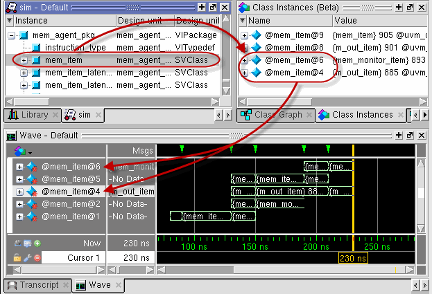
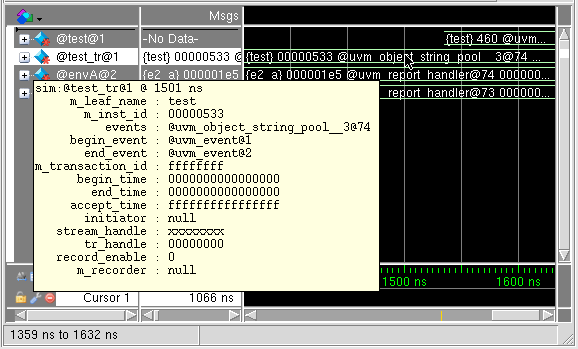

The suggested
workflow for viewing SystemVerilog class objects in the Wave window
is as follows.
Prerequisites
Specify
the -classdebug argument to vsim (refer
to “Enabling Class Debug” for more information).
Log
the class objects you are interested in viewing (refer to “Logging Class Types and Class Instances” for more information).
Run
the simulation until the specific class object(s) come into existence either
by running a [run 0] command at time 0 to complete design elaboration,
or by running the simulation until the class objects exist.
Procedure
- Select
a design unit or testbench SV class object in the Structure Window
that contains the class objects you want to see (Figure 1). The object will be identified as
a SV class object in the Design Unit column. All currently existing
class instances associated with that design unit or testbench item
are displayed in the Class Instances window. (Open the Class Instances
window by selecting from
the menus or use the view class
instances command.)
- Place the class objects in
the Wave window once they exist by doing one of the following:
Drag a class instance from
the Class Instances window or the Objects window and drop it into
the Wave window.
Select
multiple objects in the Class Instances window, click and hold the
Add Selected to Window button in the Standard toolbar, then select
the position of the placement; the top of the Wave window, the end
of the Wave window, or above the anchor location The group of class
instances are arranged with the most recently created instance at
the top. You can change the order of the class instances to show
the first instance at the top of the window by selecting .
Figure 1. Adding Class Objects
in the Wave Window
- You can hover the mouse over
any class waveform to display information about the class variable
(Figure 2).
Figure 2. Class Information
Popup in the Wave Window